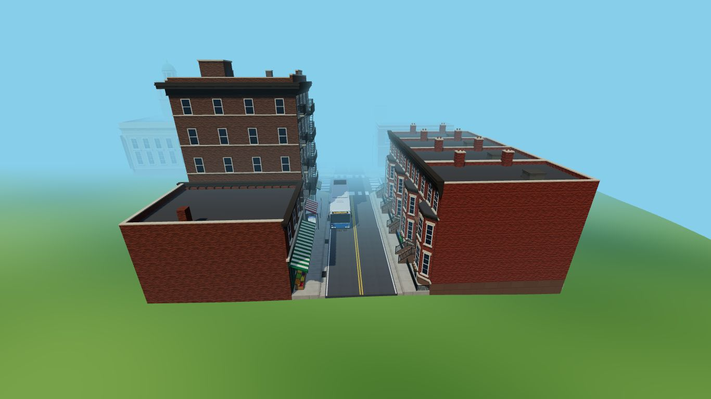
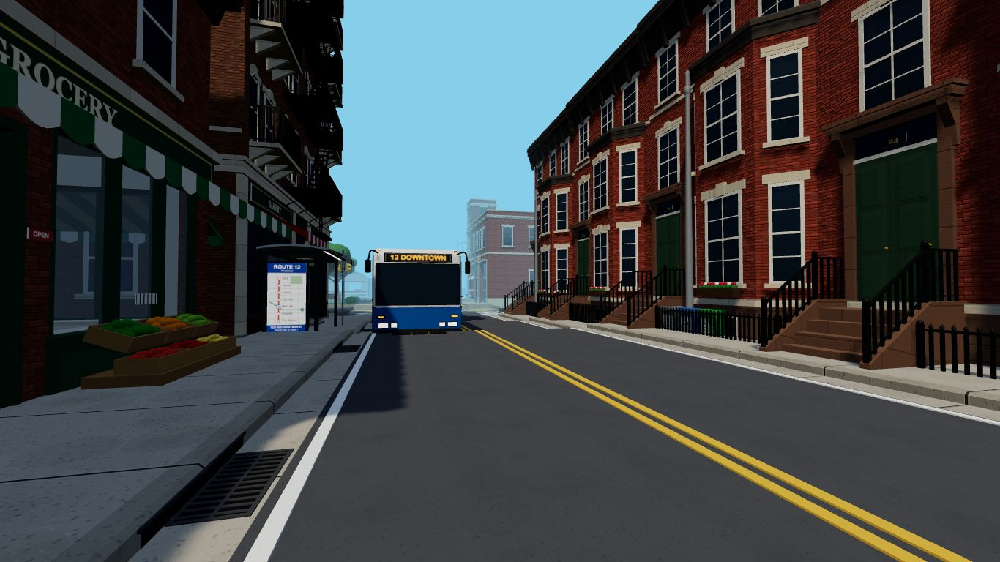
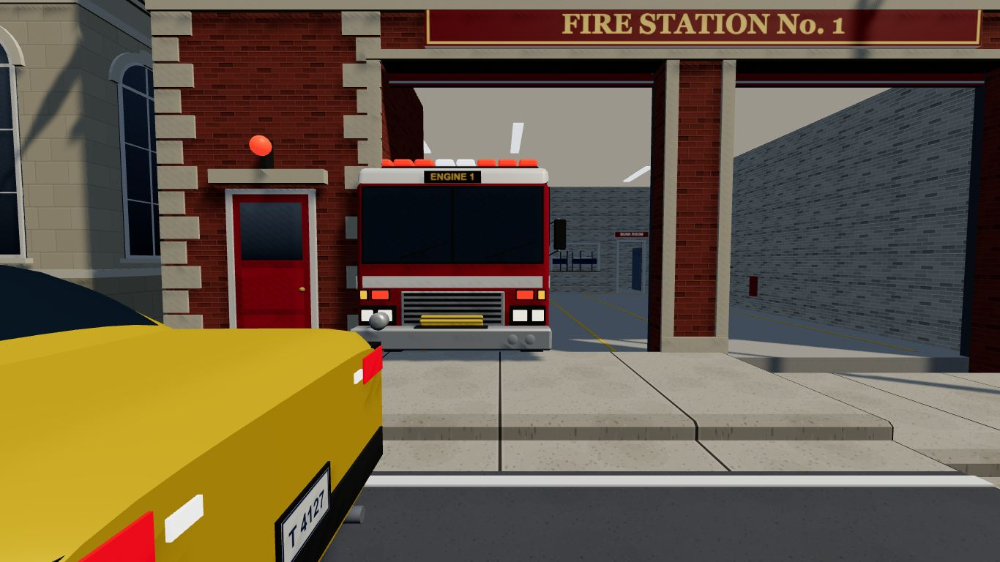

🚦 Build a City
30 life-size pieces that fit together on one grid: streets, homes, shops, community buildings, vehicles and utilities. Lay out the streets, decide where everything goes, then bring it to life with code.
Getting there: open My World, an empty field made for building. Then tap ☰ Menu → Model Database → 🚦 Build a City, pick a piece and press Place. The address is edusim3dweb.com/app/?world=8. Opening a world link replaces the world you were in, so use Save World first if you want to keep it.
Moving a piece: click the orange 🔨 over it and choose Rotate/Move Shape. Drag the box to slide it, and drag a ring to turn it. Everything is real size, so stand on the sidewalks and walk into the shops. You are 5 feet tall here.



The kit
Homes and shops
Community buildings
Vehicles
Streets
Parks and utilities
Six activities
1. Streets first
Every piece sits on a 10-foot grid. A Road Section is exactly 20 feet long and 40 feet across: two 12-foot lanes and an 8-foot sidewalk on each side. Place one and press its green ▶ once: three more appear in a straight line.
- repeat 3 times
- duplicate 20 ft away
A Four-Way Intersection is 40 feet square, and every one of its four sides matches a road section, so streets can join it from any direction. Rows always grow the same way across the world, so lay the streets that run the other way by turning a section a quarter turn first.
Work it out: how many road sections make a street 200 feet long? If a city block has four sections between two intersections, how far is it from the middle of one intersection to the middle of the next?
Teacher: 10 sections. Four 20-foot sections plus half of each 40-foot intersection is 80 + 20 + 20 = 120 feet, the number the vehicles' programs use.
2. Where will everyone live?
Place a Row House with its front steps on a sidewalk and press its green ▶. Four houses now stand wall to wall, 20 feet each. Then place an Apartment Building on the same street.
Think: the apartment building holds 16 homes on 40 feet of street. How much street would 16 row houses need? What do the people in all those homes need nearby: a Corner Grocery, a City Park, a Elementary School? Walk from the farthest front door to each one and count your steps.
Teacher: 16 row houses take 320 feet of street. This is density, and it is why cities build up as well as out.
3. Community helpers
Place the Fire Station, the Hospital and the Police Station. Park a Fire Engine in a bay of the fire station and press its green ▶. It drives 120 feet and turns right, round and round a block.
- forever
- glide 120 feet over 8 seconds
- rotate -90 degrees
Think: which home is farthest from the fire station? How long would the engine take to get there at 15 feet a second? Where would you build a second station, and where should the Fire Hydrants go?
Teacher: glide 120 feet over 8 seconds is 15 feet a second, about 10 miles an hour. A negative rotate turns right.
4. Program the traffic light
Place a Traffic Light on a corner of an intersection and press its green ▶. It changes from green to yellow to red. Click it and choose Program: the light reads its own three numbers, in seconds.
- set green to 8
- set yellow to 3
- set red to 8
- forever
- wait 1 seconds
Work it out: how long is one whole cycle? Change green to 15 and press ▶ again. How long is the cycle now? How many cycles happen in one minute? Should the light stay green longer for the busy street?
Teacher: 19 seconds, then 26 seconds. At 26 seconds a cycle there are just over two cycles a minute.
5. Plan a route
Place the City Bus on a street and press its green ▶. It stops every 40 feet, three times, then turns round. Put a Bus Stop wherever it stops. The Garbage Truck and the Delivery Truck stop every 20 feet instead, once for each row house.
- forever
- repeat 3 times
- glide 40 feet over 4 seconds
- wait 2 seconds
- rotate 180 degrees
Try: change the bus so it stops only at every intersection. Change the garbage truck so it collects from a row of eight houses. What is the farthest any home in your city is from a bus stop?
Teacher: intersections are 120 feet apart if there are four road sections between them. Eight houses means changing repeat 4 to repeat 8.
6. A city that runs itself
Cities rely on news travelling fast. Give three pieces a program each, so each one answers the last.
- wait 2 seconds
- say "Fire at the library!"
- when an object says "Fire at the library!"
- wait 1 seconds
- say "Engine 1 on the way!"
- when an object says "Engine 1 on the way!"
- glide 120 feet over 8 seconds
Then give the Street Light a program that starts by itself, and slide ☰ Menu → Look Around → Time of Day to dusk:
- when the sun goes down
- say "Lights on!"
Think: what else in your city should happen at sunrise, at noon or at night? Read the Water Tower’s and the Solar Panel Array’s cards: where does your city’s water and power come from? When your city is done, walk through it and tell someone its story, then use Save World to keep it or send it to a friend.